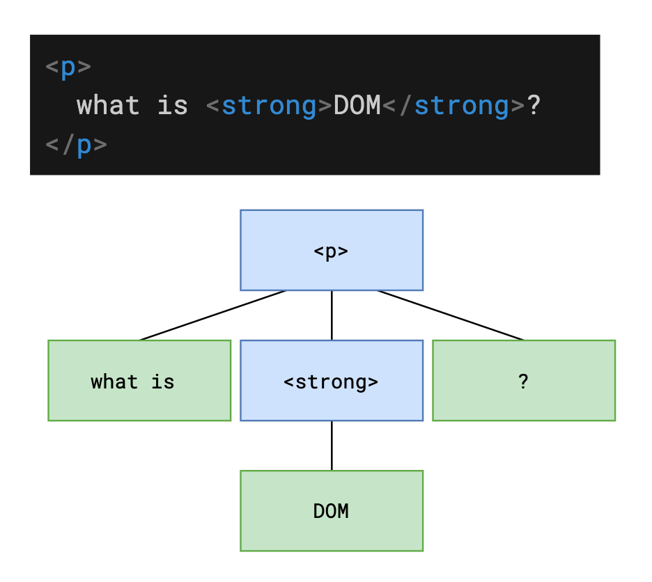
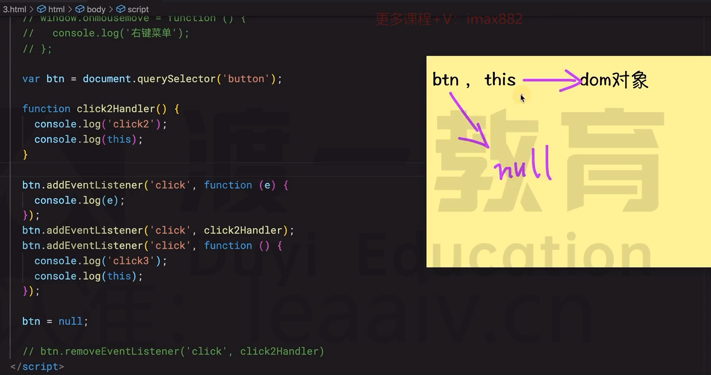
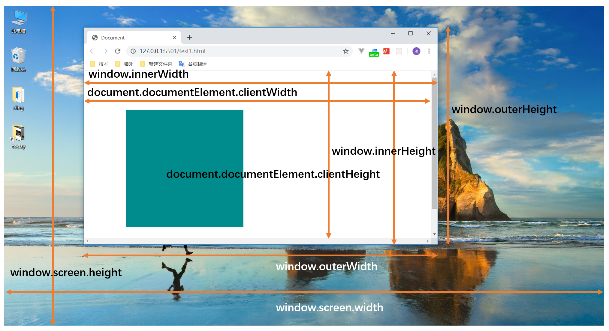
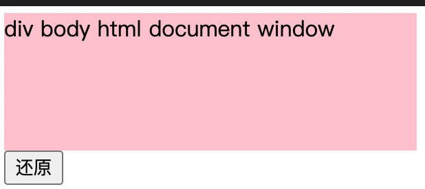
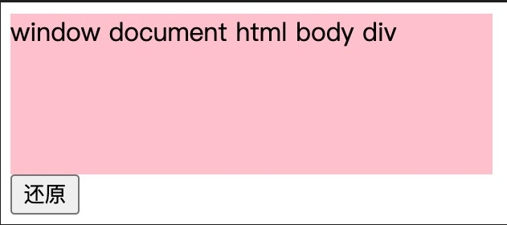
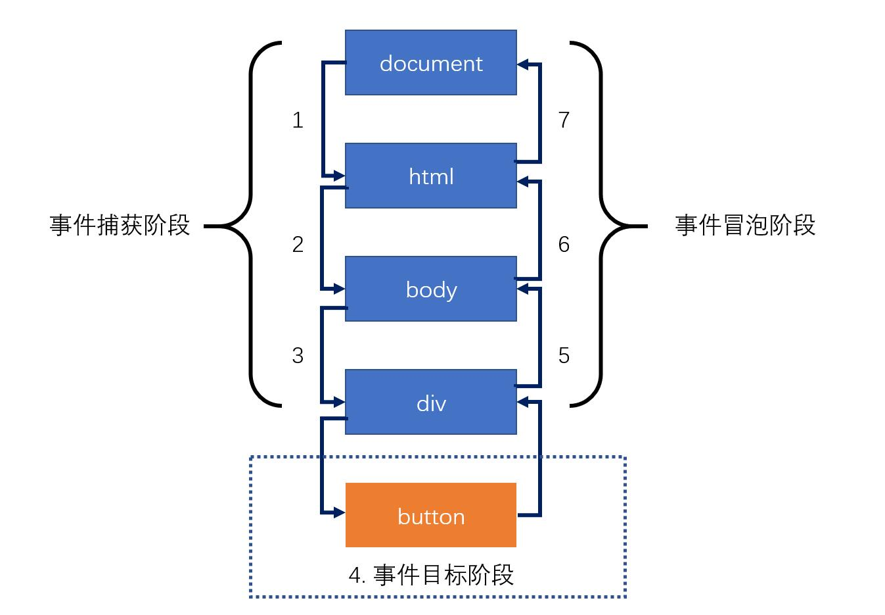

DOM
DOM 是一个对象，它对应到 HTML 中的节点

获取 dom
| API | 含义 | 备注 |
|---|---|---|
| document.getElementById() | 根据元素 id 获取 dom | 得到单个 dom |
| document.getElementsByTagName() dom.getElementsByTagName() | 根据元素名称获取 dom | 得到 dom 的伪数组 |
| document.getElementsByClassName() | 根据元素类样式获取 dom | 得到 dom 的伪数组 |
| document.querySelector() | 根据 CSS 选择器获取 dom | 得到第一个匹配的 dom |
| document.querySelectorAll() | 根据 CSS 选择器获取 dom | 得到所有匹配的 dom 伪数组 |
| document.documentElement | 获取 html 元素 | |
| document.body | 获取 body | |
| document.head | 获取 head | |
| dom.children | 获取 dom 的子元素 | 得到 dom 的伪数组 |
| dom.childNodes | 获取 dom 的子节点 | 得到 dom 节点的伪数组 |
| dom.previousElementSibling | 得到 dom 前一个兄弟元素 | |
| dom.nextElementSibling | 得到 dom 后一个兄弟元素 | |
| dom.parentElement | 得到 dom 的父元素 |
创建 dom
| API | 含义 | 备注 |
|---|---|---|
| document.createElement() | 创建一个 dom 并返回 | 传入元素名称 |
更改 dom 结构
这里是指更改文档树（DOM 树）
| API | 含义 | 备注 |
|---|---|---|
| dom.remove() | 从文档树中删除 dom | 不是删除对象 |
| dom.removeChild() | 删除 dom 的某个子节点 | 传入 dom 对象 |
| dom.insertBefore() | 在 dom 的子节点中，添加一个新节点到另一个节点之前 | |
| dom.appendChild() | 添加一个新节点到 dom 的子节点末尾 | 传入 dom 对象 |
dom 属性
HTML 元素属性有两种：
- 标准属性：HTML 元素本身拥有的属性，例如：
- a 元素的 href、title
- input 的 value
- img 的 src
- ……
- 自定义属性：HTML 元素标准中未定义的属性
所有标准属性均可通过 **dom.属性名** 得到，其中：
- 布尔属性会被自动转换为 boolean
- 路径类的属性会被转换为绝对路径
- 标准属性始终都是存在的，不管你是否有在元素中属性该属性
- class 由于和关键字重名，因此需要使用 className
所有的自定义属性均可通过下面的方式操作：
dom.setAttribute(name, value)，设置属性键值对dom.getAttribute(name)，获取属性值
自定义属性和元素源码书写是对应的，可以尝试获取 a 元素的 href 属性对比标准属性，看看有什么不同。
dom 内容
| API | 含义 | 备注 |
|---|---|---|
| dom.innerText | 获取或设置元素文本内容 | 设置时会自动进行 HTML 实体编码 |
| dom.innerHTML | 获取或设置元素的 HTML 内容 |
dom 样式
在 JS 中，有两种样式：
- 内联样式：元素的 style 属性中书写的样式
- 计算样式（最终样式）：元素最终计算出来的样式
JS 可以获取内联样式和计算样式，但只能设置内联样式
下面罗列了样式的常见操作：
dom.style：获取元素的内联样式，得到样式对象- 对象中的所有样式属性均可以被赋值，赋值后即可应用样式到元素的 style 中
window.getComputedStyle(dom)：获取元素的计算样式，得到一个样式对象- 该样式对象中的属性是只读的，无法被重新赋值
关于样式对象，注意：
- 当给样式赋值为空字符串时，相当于删除内联样式
- 当给样式的赋值不合法时，赋值语句无效，不会报错
- CSS 的短横线命名法，在属性名中表现为驼峰命名法
监听 dom 事件
监听事件可以描述为一句话：
某个 DOM发生了某件事之后，我需要做某些处理
- 某个 DOM：监听谁？
- 某件事（事件类型）：它发生了什么？
- 某些处理（处理函数）：我要做什么？
下面是一段事件监听代码：
// 为dom注册点击事件，当被点击时，自动运行事件处理函数
dom.onclick = function () {
console.log("dom 被点击了");
};
事件类型
https://developer.mozilla.org/zh-CN/docs/Web/Events
表单类事件
| 事件名称 | 触发时机 | 备注 |
|---|---|---|
| submit | 表单被提交时触发 | 注册到 form 元素上 |
| input | 文本框改变后立即出发 | 注册到 input、textarea 上 |
| change | 文本框改变后、失去焦点时触发 下拉列表、多选框、单选框改变后立即触发 | 注册到 input、select、textarea 上 |
| reset | 表单被重置时触发 | 注册到 form 元素上 |
| focus | 元素聚焦时触发 | |
| blur | 元素失去焦点时触发 |
鼠标类事件
| 事件名称 | 触发时机 | 备注 |
|---|---|---|
| click | 鼠标按下抬起后触发 | |
| contextmenu | 右键菜单显示前触发 | |
| mousedown | 鼠标按下时触发 | |
| mouseup | 鼠标抬起时触发 | |
| mousemove | 鼠标在元素上移动时触发 | |
| mouseenter | 鼠标进入元素时触发（不冒泡） | |
| mouseleave | 鼠标离开元素时触发（不冒泡） | |
| mouseover | 鼠标进入元素时触发（冒泡） | |
| mouseout | 鼠标离开元素时触发（冒泡） | |
| wheel | 鼠标滚轮滚动时触发 |
键盘事件
| 事件名称 | 触发时机 | 备注 |
|---|---|---|
| keydown | 某个键被按下时触发 | |
| keyup | 某个键被抬起时触发 |
注册事件
JS 提供了三种方式注册事件
方式 1：将事件注册写到元素上，这种方式基本被弃用
<button onclick="js代码">按钮</button>
方式 2：使用 dom 属性注册事件
属性名为on+事件类型
// 监听事件
dom.onclick = function () {
// 处理函数
};
// 移除监听事件
dom.onclick = null;
这种方式的特点是：
- 优点：易于监听、覆盖、移除
- 缺点：只能注册一个处理函数
- 缺点：某些事件不支持用这种方式注册
方式 3：使用 addEventListener 方法注册事件
dom.addEventListener("click", function () {
// 处理函数1
});
dom.addEventListener("click", function () {
// 处理函数2
});
这是最完美的事件注册方式，如果要移除用这种方式注册的事件，需要改写代码
function handler1() {
// 处理函数1
}
function handler2() {
// 处理函数2
}
//这里handler1不能加括号addEventListener这个方法会运行handler1的返回结果
dom.addEventListener('click', handler1);
dom.addEventListener('click', handler2，);
dom.removeEventListener('click', handler1); // 移除监听函数1
第三个参数
capture：
true:捕获阶段
false:冒泡阶段(默认)
once:
一个布尔值，表示 <font style="color:rgb(27, 27, 27);">listener</font> 在添加之后最多只调用一次。如果为 <font style="color:rgb(27, 27, 27);">true</font>，<font style="color:rgb(27, 27, 27);">listener</font> 会在其被调用之后自动移除。
一个布尔值，设置为 <font style="color:rgb(27, 27, 27);">true</font> 时，表示 <font style="color:rgb(27, 27, 27);">listener</font> 永远不会调用 <font style="color:rgb(27, 27, 27);">preventDefault()</font>。如果 listener 仍然调用了这个函数，客户端将会忽略它并抛出一个控制台警告。查看使用 passive 改善滚屏性能以了解更多。
事件处理函数
当事件发生时，会自动调用事件处理函数，并向函数传递一个参数，该参数称之为事件对象(event)，里面包含了事件发生的相关信息，比如鼠标位置、键盘按键等等
dom.addEventListener("click", function (event) {
console.log(event.clientX); //打印鼠标的横坐标
});
event.preventDefault(); // 阻止默认事件,例如a标签的跳转行为
event.stopPropagation(); // 阻止冒泡
event.stopImmediatePropagation(); // 事件响应优先级：例如同一元素绑定不同事件时，触发a事件不让b事件触发
event.currentTarget; // 当前绑定事件的元素
event.target; // 当前被点击的元素
在事件处理函数中，this始终指向注册事件的 dom
btn只保存了dom对象的地址
let btn = dom;
当修改了btn不会改变this的指向

this 与 event 的区别
this 是绑定事件的元素，event.target 是触发事件的元素
this 始终指向注册事件的 dom，事件对象(event)里面包含了事件发生的相关信息（event.clientX 点击的横坐标之类的）
dom 进阶
事件默认行为
某些元素的某些事件，浏览器会有自己的默认行为
比如：
- a 元素的 click 事件，浏览器会跳转页面
- form 元素的 submit 事件，浏览器会提交表单，最终导致页面刷新
- 文本框的 keydown 事件，浏览器会将按键文本显示到文本框中
- ……
如果我们要阻止浏览器的默认行为，就需要在对应时间中加入以下代码：
// 阻止浏览器的默认行为
e.preventDefault();
// 阻止浏览器的冒泡行为
e.stopPropagation();
e.target; // 获取事件源（目标阶段的dom）
dom 尺寸和位置



调用
dom.scrollTo(x, y)可以设置元素的滚动位置，x 和 y 分别表示 scrollLeft 和 scrollTop该方法通用元素回到元素顶部
dom.scrollTo(0, 0)如果要监听元素的滚动，可以监听事件类型：scroll
Element.getBoundingClientRect()

上图中的 top、left、right、bottom 均相对于视口
事件传播机制
冒泡
事件开始时由最具体的元素（文档中嵌套层次最深的那个节点）接收，然后逐级向上传播到较为不具体的节点（文档）
box.onclick = function () {
box.innerHTML += 'div\n';
}
document.body.onclick = function () {
box.innerHTML += 'body\n';
}
document.documentElement.onclick = function () {
box.innerHTML += 'html\n';
}
document.onclick = function () {
box.innerHTML += 'document\n';
}
window.onclick = function () {
box.innerHTML += 'window\n';
}
在上面的示例中，我们为 div 以及它的祖先元素绑定了点击事件，由于事件冒泡的存在，当我们点击 div 时，所有祖先元素的点击事件也会被触发。

捕获
事件捕获的思想是不太具体的节点应该更早接收到事件，而最具体的节点应该最后接收到事件。
事件捕获的思想是在事件到达预定目标之前就捕获它
设置捕获的时候触发点击事件
box.addEventListener('click', function () {
box.innerHTML += 'div\n'
}, true)
document.body.addEventListener('click', function () {
box.innerHTML += 'body\n';
}, true);
document.documentElement.addEventListener('click', function () {
box.innerHTML += 'html\n';
}, true);
document.addEventListener('click', function () {
box.innerHTML += 'document\n';
}, true);
window.addEventListener('click', function () {
box.innerHTML += 'window\n';
}, true);

标准 DOM 事件流
DOM 标准采用的是捕获 + 冒泡的方式。
两种事件流都会触发 DOM 的所有对象，从 document 对象开始，也在 document 对象结束。
换句话说，起点和终点都是 document 对象（很多浏览器可以一直捕获 + 冒泡到 window 对象）
DOM 事件流示意图：

// 在冒泡阶段触发
div.onclick = function () {};
// 在捕获阶段触发事件
div.addEventListener("click", function () {}, true);
// 在冒泡阶段触发事件（默认）
div.addEventListener("click", function () {}, false);
事件委托
什么时候用事件委托
1.子元素东西很多，且效果一致，不用重复去绑定事件
2.有些东西是动态的，这样就不用动态的时候再去定义事件
<div class="container">
<button>1</button>
<button>2</button>
<button>3</button>
<button>4</button>
<button>100</button>
</div>;
var container = document.querySelector(".container");
container.onclick = function (e) {
if (e.target.tagName === "BUTTON") {
console.log(e.target.innerText);
}
};
拖拽
使 html 元素可拖拽设置 draggable 属性
//开始拖拽事件
dom.ondragstart = (e) => {
//这个e.target是你拖拽的那个元素
e.target;
};
//拖拽进入别的元素事件
dom.ondragenter = (e) => {
//浏览器有默认行为，拖拽元素放手后回到原来的位置
e.preventDefault();
//这个e.target是你拖拽进入的元素
e.target;
};
//将拖拽元素拖到可以放入的元素触发(不断触发)
dom.ondragover = (e) => {
//浏览器有默认行为，拖拽元素放手后回到原来的位置
e.preventDefault();
e.target; //进入的元素
};
//拖拽结束事件
dom.ondragend = () => {
//浏览器有默认行为，拖拽元素放手后回到原来的位置
e.preventDefault();
};
//拖拽结束放手触发（必须要目标位置允许拖拽）
dom.ondrop = (e) => {
e.preventDefault(); //可以取消默认行为
e.target; //进入的元素
};